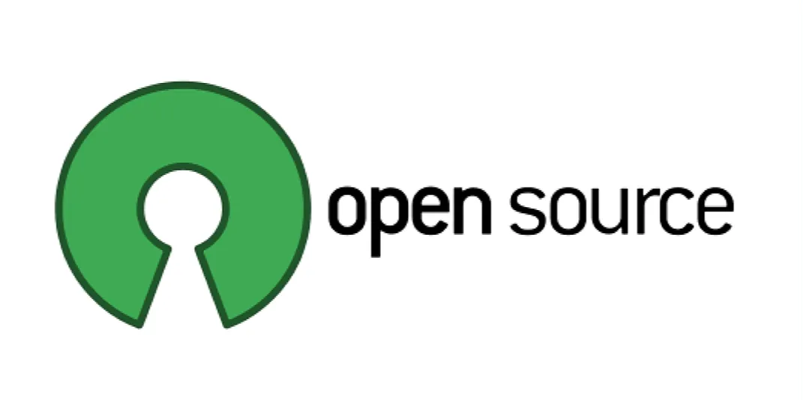

Framework
O que é um framework?
Basicamente, um framework é um conjunto de estruturas, ferramentas, bibliotecas e diretrizes que são
organizadas de forma coerente.
Por possuir uma estrutura pré-definida, os frameworks têm como objetivo facilitar o
desenvolvimento de softwares, aplicativos e sistemas em geral.
Normalmente, os frameworks seguem os padrões e boas práticas estipuladas pela indústria, o que
garante a
segurança e a compatibilidade do código gerado.
Além disso, trazem funcionalidades prontas para resolver
problemas e permitem que os desenvolvedores adicionem características específicas da aplicação
criada,
tornando
o processo de criação de software mais simples, rápido e eficiente.
Os profissionais de engenharia de software, por exemplo, utilizam os frameworks para acelerar e
simplificar
o processo de criação, permitindo que foquem na lógica da aplicação ao invés de ficarem preocupados
com
o
desenvolvimento da infraestrutura básica.
Artigo
original

API
O que é API?
API é um acrônimo em inglês para Application Programming Interface. Em português, significa Interface
de Programação de Aplicações.
De forma geral, é um conjunto de padrões, ferramentas e protocolos que permite a criação mais
simplificada e segura de plataformas, pois permite a integração e a comunicação de softwares e seus
componentes.
As APIs desempenham um papel de conectividade e interação entre diferentes sistemas e aplicações.
Existem vários tipos de APIs, cada um servindo a propósitos específicos. As APIs de biblioteca são
conjuntos de funções, procedimentos, classes ou módulos que podem ser incorporados diretamente no
código de outros projetos para facilitar tarefas específicas ou oferecer novas funcionalidades.
A ideia é que essas APIs sejam reutilizáveis e simplifiquem a implementação de operações,
proporcionando uma abstração eficiente para o processo de desenvolvimento.
Artigo original

OpenSource
O que é OpenSource?
O software de código aberto (OSS) é o código-fonte desenvolvido e mantido por meio da colaboração
aberta. Qualquer pessoa pode usar, examinar, alterar e redistribuir o OSS como achar melhor,
geralmente sem nenhum custo.
O código aberto contrasta com aplicações de software de código fechado ou proprietárias, como o
Microsoft Word ou o Adobe Ilustrator. O criador ou detentor dos direitos autorais vende o software
proprietário ou de código fechado para usuários finais, que não têm permissão para editar, aprimorar
ou redistribuir o produto, exceto conforme especificado pelo detentor dos direitos autorais.
“Código aberto” também se refere a uma abordagem baseada na comunidade para criar propriedade
intelectual, como software, por meio de colaboração aberta, inclusão, transparência e atualizações
públicas frequentes.
O código aberto tornou-se um pilar fundamental do desenvolvimento de software moderno, especialmente
no que diz respeito ao modelo de DevOps empresarial moderno, um conjunto de práticas, protocolos e
tecnologias usados para acelerar a entrega de aplicações e serviços de maior qualidade.
Artigo original